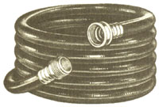
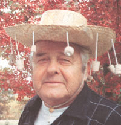
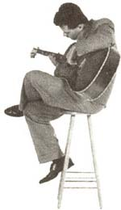

COUNTRY LORE
The easiest, fastest, and environmentally friendliest way to unclog a sink or bathtub is with your garden hose. Simply bring your hose into the room with the clogged drain. I bring mine in the front door, across my living room, down the hall, and into the bathroom. I wipe it off so I don't drag dirt or mud through the house, and my wife doesn't say a word. Just place the nozzle in the drain and wrap a rag around it to make a good seal. If there is a vent, as in bathtubs or bathroom sinks, stuff a rag tightly in there too. When you are ready, simply squeeze the handle and you have all the pressure you will need to open any clogged drain in seconds.
A few minutes and a garden hose may be all you'll need to clear that clog.
A word of caution: Squeeze the handle slowly at first and gradually bring it up to full force. I let mine run about 5-10 seconds after the clog is cleared to help flush out any other material (hair-soap scum) that may cause a clog later on. While I have the hose in the house I hit all the drains just to make sure they are flowing free.
-James J. Scott
Hermitage, PA
I have every issue of Mother Earth since the first copy. I must admit I haven't had time to read every word of every issue and sometimes I am an issue or three behind. Still it is a valued magazine for my household.
In issue No. 144 (June/July) on page 18, there were several "remedies" for bee stings. Every person has in his or her home the perfect bee sting antidote. An onion is my answer; a technique acquired from the mountaineers in West Virginia where I grew up.
If a large onion is available, cut a slice and apply it to the sting. If a green onion is used, cut just the bulb and use it. Make sure the onion has a lot of juice.
The pain will cease almost immediately if applied in a reasonably short time. There will be no swelling or soreness. The side effect? A hole appears where the stinger entered. It will be rather large (comparatively speaking). The good news is it will not be permanent. All things pass eventually.
I have used this method on myself and on my friends and children-it works. I have never heard of it being used on a snakebite, but it would be my first response before calling 911. The onion seems to draw the poison out-the large hole would seem to indicate this. Then why not on snakebites?
When camping, hiking, or just wandering, don't leave home without one!
-Homer D. Abbott
Galena, MO
Your June/July 1994 issue (#144) has Peter Godley getting sticky and gooey in the Country Lore section by applying oil to his hard hat in an attempt to keep warm weather pests out of his eyes and face. I want to share my own fly chaser with all those folks out there.
My daughter Patricia came back from Australia and brought me a souvenir, a backcountry straw hat. I thought immediately of a way to modify it and keep those flies and pests away. Using corks (from your empty wine bottles) or buying them at the general store, string several three inches apart and three or four inches long on the brim of the straw hat. Be sure the strings are not too long or you'll have eye problems. With the corks dangling, the slightest movement chases the pests away. I wear it every time I go out (but not to church). Hope you all like it.
-Joseph Mitros
Albrightsville, PA
Two years ago I hung a bird feeder near the garden. The following spring, hundreds of volunteer sunflowers sprang up. I pulled most of them, but the sunflowers in the green pepper beds were so strong and sturdy, I left them. That year my peppers were bushier than ever before and covered in blossoms. Did the sunflowers have anything to do with it?
Skeptical, the next year I deliberately planted one sunflower for every two green pepper plants-and again the yield was overwhelming. Perhaps the sunflowers give just the right amount of shade to the peppers, perhaps they just grow well together, who knows? I do know that from now on sunflowers and pepper plants will share a bed in my vegetable garden.
The birds adored those huge sunflower heads, too. After harvest, I nailed them to a fence post and let the birds have a go at them.
-Julie G. DeGroat
Theresa, NY
Recycle old credit cards into guitar picks. Cut with sharp scissors, using the pick of your choice as a pattern. If you're "picky" (pun intended!), shape to perfection with a nail file.
-Merideth DeVoe
East Wallingford, VT
After experimenting with various ways to keep the rabbits, groundhogs, and other four-legged nuisances out of my garden, I hit upon a simple and absolutely free technique last spring. When the weather just begins to warm up, I put several carpet remnants out on the front porch for our two dogs to lie on. After a few weeks of lounging, I took these scraps out to the borders of the garden and replaced them with new ones on the porch. The dog scent managed to repel the marauders so well that I've hardly lost a vegetable through both the growing and harvest season.
-John Pitts
Orillia, Ontario
Send your practical solutions to everyday problems to "Country Lore" c/o Mother Earth News, P.O. Box 129,Arden,
N.C. 28704.Please include your phone number and a photo.
|
 |
|
 |
|
|
 |
|